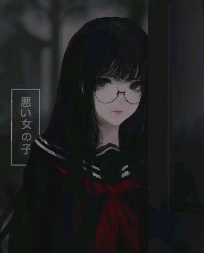

黑化家族
2025-02-23
更新历史
| 日期 | 版本 | 作者 | 更新内容 |
|---|---|---|---|
| 2025-02-23 | Shimada Mizuki | 修正错别字。 | |
| 2025-02-22 | Shimada Mizuki | 写入最初内容。 | |
| 2025-02-21 | Shimada Mizuki | 创建页面。 |
黑化家族，活跃于2016~2018年的抖音，是短视频兴起以来第一个反抗中式教育的未成年人组织。
起源
中国式家长的传统教育模式就是忽视孩子的感受、将自己的想法强加给孩子，互联网普及后，越来越多的未成年人能够轻易地在网络上找到同类人产生共鸣，这些人渐渐组成了自己的势力与圈子，「网络保守派」害怕自己的教育模式被颠覆，便想尽办法将其描述成污秽不堪、可笑至极的东西，例如戏谑调侃、颠倒黑白。2016年后抖音出现了「黑化家族」，他们借以「黑化」之名表达自己的不满与愤慨，成为了未成年人反抗中式教育的开端。
经过
黑化家族的发展并不十分顺利，由于黑化家族成员年纪普遍不大，这个年龄段争强好胜、虚荣心普遍较强，同时期另一个兴起的家族「哈莉1家族」与之发生冲突，开启了双方使用视频互喷的时代。黑化家族成员将哈莉家族成员称作「哈莉狗」。一时间，抖音成为了黑化家族和哈莉家族的战场。其他小家族，如第五家族，只沉浸在自己（可捕捉）、（已捕捉）、（已有奈布）的世界里。
结局
2018年末，黑化家族成员决定与哈莉家族在2019年「决一死战」，直至2019年后，无论是黑化家族还是哈莉家族，都已在抖音上销声匿迹。
特征
在昵称后面添加（已黑化）。
视频风格
常常采用翻图片的视频演示模式，在每一张图片上写字，然后一页一页翻以传递信息。视频所采用的图片为黑化头像。

也有的是给自己加上一些红眼、黑白特效，以展示自己的权威，但是在「网络保守派」看来这些都是搞笑的小丑。
多方的不同看法
黑化家族成员
- 争取自由和人权。
网络评论家
- 杀马特一般的东西2。
参见
「哈莉」指哈莉·奎茵（Harley Quinn）而非哈利·波特（Harry Potter）。↩
《起底失落的“黑化家族”》。↩